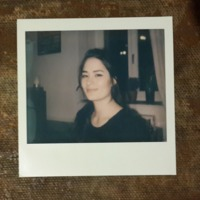

|  |
Lucy JarmanArt Historian, Content Editor, UX Designer, Web Developper Lucy is a trained Art Historian who currently works in academic publishing while training in UX design and web development. She is based in Berlin, Germany. |
| 2011-2014 | Gallery Assistant at Ketterer Kunst Auction House |
| 2013-2015 | Student Assistant at Research and Fellowship Program Art Histories and Aesthetic Practices |
| 2015-2019 | Coordinator of Research and Fellowship Program CAHIM - Connecting Art Histories in the Museum |
| 2019-present | Content Editor at De Gruyter Publishing House |
| HTML | ⭐⭐ | Figma | ⭐⭐⭐ |
| Procreate | ⭐⭐⭐ | KuP | ⭐⭐⭐⭐⭐ |